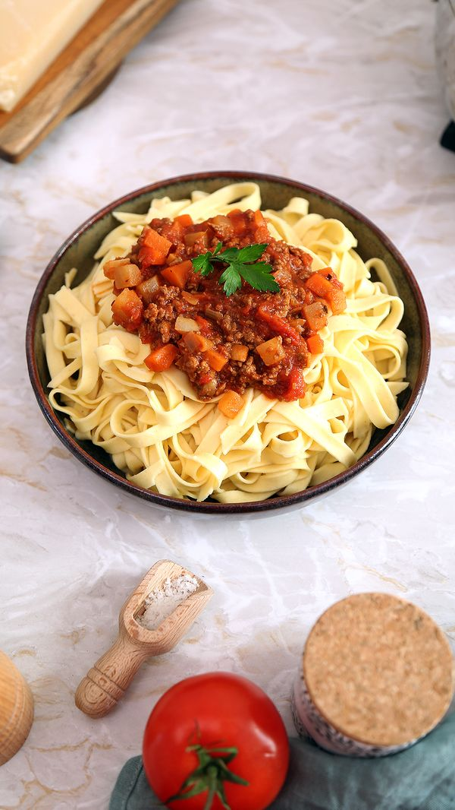

Bolognaise
Home

Ingredients
- 1 tablespoon olive oil
-
1 onion diced
- 3 celery sticks small diced
- 2 carrot sticks peeled and small diced
- 2 garlic cloves minced
- 1 pound lean ground beef
- ½ teaspoon salt
- ½ teaspoon black pepper
- 1 cup whole milk
- 1 (28-ounce) can crushed tomatoes
- 2 tablespoons tomato paste
- 1 bay leaf
- 1 teaspoon oregano
- ¼ teaspoon nutmeg
- 16 ounces Tagliatelle pasta or any pasta of choice
- Chopped parsley for serving
Steps
-
Heat the olive oil in a large, heavy-bottomed pot over medium heat. Add the onions, celery, carrots and garlic, and sauté for a few minutes until the vegetables soften.
- Add the beef and season with salt and pepper. Break up the ground beef and cook until it’s browned and crumbled. stirring occasionally.
- Add the milk and allow it to simmer until it has mostly evaporated, stirring occasionally, in order to help tenderize the beef, about 10 minutes.
- Add the crushed tomatoes, tomato paste, bay leaf, oregano and nutmeg. Mix to combine, bring mixture to a boil and then simmer on low uncovered for at least 30 minutes, but preferably 1-2 hours. Simmering for longer will enhance the flavor. Remove from heat and discard the bay leaf.
- When ready to serve, bring a large pot of salted water to a boil. Cook the pasta and add to individual bowls. Spoon the Bolognese sauce over it. Garnish with freshly chopped parsley and grated Parmesan cheese, if desired.